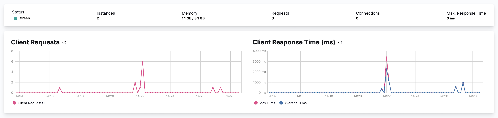

Kibana Monitoring Metrics
editTo view the key metrics that indicate the overall health of Kibana itself, click Overview in the Kibana section of the Stack Monitoring page.

-
To view Kibana instance metrics, click Instances.
The Instances section shows the status of each Kibana instance.
- Click the name of an instance to view its instance statistics over time.